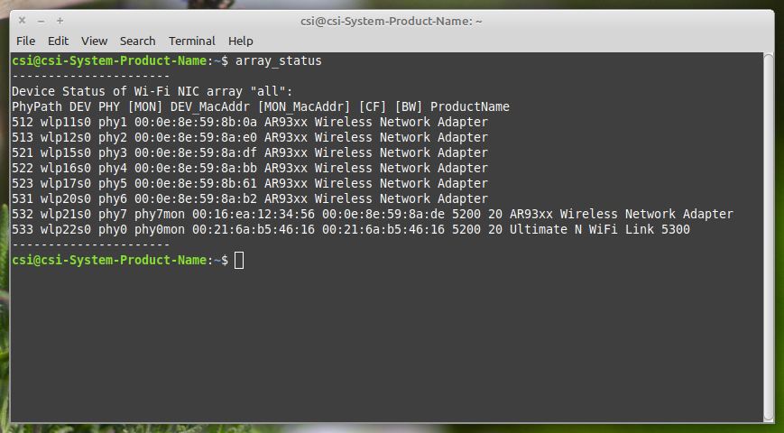

Revisions
- Dec. 3, 2023 Add radar mode and MIMO radar mode, see Wi-Fi Radar (802.11bf Mono-Static Sensing Mode) with 802.11a/g/n/ac/ax/be Frame Format.
On this page, we will demonstrate the methods of CSI measurement and various low-level controls on different hardware frontends. You can jump to the interested topics via following links:
- Before Getting Started: Some Fundamentals
- ISAC Research using NI USRP or HackRF One SDR
- CSI Measurement using AX210/AX200 NICs
- CSI Measurement using QCA9300 and IWL5300 NICs
- Interoperability among SDR and COTS NICs
Before we proceed, it is assumed that you have already installed the PicoScenes software and the supported hardware. See PicoScenes Installation & Upgrade for hardware and software installation guides.
Hint: 如果您不想费劲地看英文，请开启浏览器的翻译功能，省脑子。
6.1. Before Getting Started: Some Fundamentals
Here we introduce two fundamentals Device Naming and Basic Facts of Wi-Fi Channelization.
6.1.1. Device Naming
In order to mult-frontend operation, we devise an simply device naming protocol, which is elaborated in the follow section.
6.1.1.1. Device Naming for Commercial Wi-Fi NICs
PicoScenes provides a script named array_status, which lists all the PCI-E based Wi-Fi NICs. A sample output is as below:

In the array_status output, there are four IDs for each NIC: PhyPath, PhyId, DevId, and MonId. Their explanations are shown below. Among them, we strongly recommend using PhyPath ID in all scenarios.
| ID Type | Description |
|---|---|
| PhyId | The Physical ID is assigned by the Linux mac80211 module at the system level, primarily used for low-level hardware control. The main drawback is that Physical ID may change upon each reboot*. |
| DevId | The Device ID is also assigned by the Linux mac80211 module at the system level, mainly used for link-level Wi-Fi configuration. The main drawback is that Device ID may change upon each reboot*. |
| MonId | The Monitor interface ID is created by user for the attached monitor interface. The main drawback is that the monitor interface does not exist by default. |
| PhyPath (Recommended) | To address the issue of ID inconsistency, we introduce a new ID called PhyPath, listed in the first column of the array_status output. The main advantage of PhyPath is that it remains consistent across reboots and even system reinstallations, because it is bound to the PCI-E connection hierarchy. PhyPath is supported throughout the PicoScenes system, including the PicoScenes program, plugins, and bash scripts. |
6.1.1.2. Device Naming for SDR
Device naming for SDR devices has three subtypes: Device Naming for NI USRP, Device Naming for HackRF One, and Device Naming for Virtual SDR.
6.1.1.2.1. Device Naming for NI USRP
We devise a simple and scalable naming protocol for USRP devices. It has four forms:
usrp: Used in case of only one USRP device connected to computer. For example, only one USRP device is connected to computer, you can select this device with simplyusrp.usrp<IPADDRESS_or_RESOURCEID_or_SERIALID_or_DEVICENAME>: Used in case of selecting one of multiple connected USRP devices. For example, in order to select a USRP X310 device (ip-addr=192.168.40.2, serial=DID1234, name=myX310, resourceId=RID4567) from multiple USRP devices connected, this device can be represented by any one of the four possible IDs:usrp192.168.40.2,usrpDID1234,usrpmyX310orusrpRID4567.usrp<IPADDRESS_or_RESOURCEID_or_SERIALID_or_DEVICENAME>,[multiple <IPADDRESS_or_RESOURCEID_or_SERIALID_or_DEVICENAME>]: Used in case of combining multiple USRPs devices. For example, the combination of two USRP X310 devices (with IP addresses of 192.168.40.2 and 192.168.41.2) can be represented byusrp192.168.40.2,192.168.41.2.usrp<IPADDRESS0_IPADDRESS1>,[multiple <IPADDRESS0_IPADDRESS1>]: Used in case of combining the two 10GbE connections of one or multiple USRP X310 devices. Assume you have two USRP X310 devices connected. The first USRP X310 device has two 10GbE connections with IP addresses of 192.168.30.2 and 192.168.40.2, and the second USRP X310 device has two 10GbE connections with IP addresses of 192.168.70.2 and 192.168.80.2. The combination of the two channels of the first X310 can be represented byusrp192.168.30.2_192.168.40.2. The combination of the all four channels can be represented byusrp192.168.30.2_192.168.40.2,192.168.70.2_192.168.80.2. The combination of the first two and the last one can be represented byusrp192.168.30.2_192.168.40.2,192.168.80.2.
6.1.1.2.2. Device Naming for HackRF One
All HackRF One devices are named as hackrf<Device_Number>, e.g., hackrf0 or hackrf1. The starting device number is 0, and the device number with is the same order as the command SoapySDRUtil --find="driver=hackrf" lists.
6.1.1.2.3. Device Naming for Virtual SDR
The Virtual SDR device adopts the naming pattern of virtualsdr<ANY_GIVEN_ID>, e.g., virtualsdr0, virtualsdr_astringId or the simplest virtualsdr.
6.1.2. Basic Facts of Wi-Fi Channelization
Many PicoScenes users are confused about how to correctly specify Wi-Fi channels for COTS NICs and SDR devices. We create a big table Wi-Fi Channelization for reference.
6.2. ISAC Research using NI USRP or HackRF One SDR
PicoScenes can drive SDR devices to transmit 802.11a/g/n/ac/ax/be format frames, receive frames, and measure the CSI data in real-time. In the following sections, we explore four major topics:
- Receiving frames and measuring CSI by Listening to Wi-Fi Traffic and Measuring CSI for 802.11a/g/n/ac/ax/be-Format Frame
- Transmitting Frames by Transmitting 802.11a/g/n/ac/ax/be protocol frames using SDR Devices
- Wi-Fi Radar mode by Wi-Fi Radar (802.11bf Mono-Static Sensing Mode) with 802.11a/g/n/ac/ax/be Frame Format
- Non-Standard Tx and Rx by Transmission, Reception, and CSI Measurement with Non-Standard Channel and Bandwidth
- Concurrent multi-SDR operation by Concurrent Multi-SDR Operation on a Single Computer
- Some advanced features by Advanced Features
6.2.1. Listening to Wi-Fi Traffic and Measuring CSI for 802.11a/g/n/ac/ax/be-Format Frame
6.2.1.1. Listening to 20 MHz Bandwidth Channels
In the simplest form, if you want to listen to the Wi-Fi traffic of a 20 MHz bandwidth channel centered at 2412 MHz using an SDR device with the ID SDR_ID (see Device Naming for SDR for SDR_ID), you can use the following command:
PicoScenes "-d debug -i SDR_ID --mode logger --freq 2412 --plot"
The command options, "-d debug -i SDR_ID --freq 2412 --mode logger --plot", have the following interpretations:
-d debug: Modifies the display level of the logging service to debug;-i SDR_ID --mode logger: Switches the deviceSDR_IDto CSI logger mode, see Device Naming for SDR forSDR_ID;--freq 2412: Change the center frequency of deviceSDR_IDto 2412 MHz;--plot: Live-plots the CSI measurements.
Hint: PicoScenes sets many Rx parameters by default, such as using the RX_CBW_20 preset, using the Tx/Rx antenna port, using the normalized 0.65 Rx gain, etc. See Rx Gain Control: Manual GC and AGC for Rx Gain control.
6.2.1.2. Listening to 40/80/160/320 MHz Bandwidth Channels
In this case, if you want to listen to the Wi-Fi traffic on a 40 MHz bandwidth channel centered at 5190 MHz (or “5180 HT40+” or “5200 HT40-“) using an SDR device with the ID SDR_ID (see Device Naming for SDR for SDR_ID), you can use the following command:
PicoScenes "-d debug -i SDR_ID --mode logger --freq 5190 --preset RX_CBW_40 --plot"
The command options, "-d debug -i SDR_ID --freq 5190 --preset RX_CBW_40 --plot", have the following interpretations:
-d debug: Modifies the display level of the logging service to debug;-i SDR_ID --mode logger: Switches the deviceSDR_IDto CSI logger mode, see Device Naming for SDR forSDR_ID;--freq 5190: Change the center frequency of deviceSDR_IDto 5190 MHz;--preset RX_CBW_40: Change the Rx bandwidth to 40 MHz;--plot: Live-plots the CSI measurements.
Similarly, if you want to listen to an 80 MHz bandwidth channel centered at 5210 MHz using an SDR device with the ID SDR_ID, you can use the following command:
PicoScenes "-d debug -i SDR_ID --mode logger --freq 5210 --preset RX_CBW_80 --plot"
Similarly, if you want to listen to a 160 MHz bandwidth channel centered at 5250 MHz using an SDR device with the ID SDR_ID, you can use the following command:
PicoScenes "-d debug -i SDR_ID --mode logger --freq 5250 --preset RX_CBW_160 --plot"
Hint: You can refer to PicoScenes Presets for a full list of presets.
Important: Not all SDR devices support the 40/80/160 MHz sampling rate. For example, HackRF One with a maximum of 20 MHz sampling rate does not support 40 MHz or wider sampling rate. While the NI USRP X3x0 Series or other advanced models have a maximum of over 200 MHz sampling rate, supporting the 40/80/160 MHz bandwidth channels.
6.2.1.3. Antenna Selection (Only for NI USRP Device)
NI USRP features two antenna ports for each RF channel, TX/RX and RX2. PicoScenes provides a pair of options for Tx/Rx antenna selection: --tx-ant and --rx-ant. For example, if you want to use the RX2 antenna port for signal receiving, you can add --rx-ant to the above command:
PicoScenes "-d debug -i SDR_ID --mode logger --freq 5250 --preset RX_CBW_160 --rx-ant RX2 --plot"
Important: PicoScenes uses the TX/RX port of each RF channel by default.
6.2.1.4. Rx Gain Control: Manual GC and AGC
Proper Rx gain, or Rx signal amplification level, is crucial for Rx decoding performance and CSI measurement quality. Depending on the distance and strength of the transmitted signal, you may need to adjust the Rx gain. PicoScenes provides two ways to specify the Rx gain: using the absolute gain value or the normalized gain value.
- Specifying the absolute Rx gain: To set the Rx gain to a specific value, you can use the
--rx-gainoption followed by the desired gain value in dBm. For example:
PicoScenes "-d debug -i SDR_ID --mode logger --freq 2412 --plot --rx-gain 20"
In this command, `--rx-gain 20` specifies an absolute Rx gain of 20 dBm.
-
Specifying the normalized Rx gain: To set the Rx gain using a normalized value, you can use the
--rx-gainoption followed by the desired normalized gain value. For example:PicoScenes "-d debug -i SDR_ID --mode logger --freq 2412 --plot --rx-gain 0.7"The
--rx-gain 0.7specifies a normalized Rx gain of 0.7, equivalent to 0.7 of the hardware-supported maximum Rx gain.If the value specified to
--rx-gainis greater than 1, the value is considered to be the absolute gain; otherwise, the normalized gain values.Hint: PicoScenes sets
--rx-gainto 0.65 by default. -
Automatic Gain Control (AGC): Some SDR devices support automatic gain control (AGC), such as the NI USRP B210. To enable AGC, you can use the
--agcoption. For example:PicoScenes "-d debug -i A_B210_SDR --mode logger --freq 2412 --plot --agc"This command enables AGC for the SDR device with the ID A_B210_SDR.
6.2.1.5. Multi-Channel Rx by Single NI USRP Device
PicoScenes supports multi-channel Rx and even multi-USRP combined multi-channel Rx. For example, the NI USRP B210, X310, and other advanced models have two or more independent RF channels. PicoScenes supports receiving dual/multi-channel signals and decoding MIMO frames.
-
Single USRP Device - Dual/Multi-Channel Rx
For example, if you want to use an X310 or other multi-channel USRP devices to listen to Wi-Fi traffic on the 40 MHz channel centered at 5190 MHz (the 5180 HT40+ or 5200 HT40- channel) with two Rx channels, you can use the following command:
PicoScenes "-d debug -i usrp --mode logger --freq 5190 --preset RX_CBW_40 --rxcm 3 --plot"In this command,
--rxcm 3specifies the Rx chainmask value of 3, indicating the use of the 1st and 2nd Rx antennas for Rx. The--rxcmoption allows you to specify the antenna selection using a bitwise style: 1 for the 1st antenna, 2 for the 2nd antenna, 3 for the first 2 antennas, 4 for the 3rd antenna, 5 for the 1st and 3rd antennas, and so on.If you want to use an X310 or other multi-channel USRP devices to listen to Wi-Fi traffic on the 80 MHz channel centered at 5210 MHz with two Rx channels, you can use the following command:
PicoScenes "-d debug -i usrp --mode logger --freq 5210 --preset RX_CBW_80 --rxcm 3 --plot" -
Single USRP Device - Dual/Multi-Channel Rx with Dual 10GbE connections
The previous option cannot support the dual-channel signal receiving and decoding for a 160 MHz channel, because the dual-channel 160 MHz-rate signal receiving requires up to 12.8Gbps Ethernet bandwidth which exceeds the limit of a single 10GbE connection. Therefore, you have to use the dual 10GbE connection to satisfy this bandwidth. Assuming the dual-10GbE connection is correctly set up with IP address of 192.168.30.2 and 192.168.40.2, you can use the following command to perform dual-channel receiving for a 160 MHz bandwidth channel centered at 5250 MHz:
PicoScenes "-d debug -i usrp192.168.30.2_192.168.40.2 --mode logger --freq 5250 --preset RX_CBW_160 --rxcm 3 --plot"Hint: You can follow the guides below to setup dual 10GbE connections for the X3x0 and N3x0 series.
6.2.1.6. Multi-Channel Rx by Multiple NI USRP Devices
PicoScenes supports combining multiple NI USRP devices of the same model into a single, virtual device, providing a higher level of MIMO and larger cross-antenna phase coherency. Taking the NI USRP X310 as an example, if you have two X310 devices and each is equipped with dual UBX-160 daughterboards, we can achieve four-channel phase coherent Rx if they are properly combined and synchronized.
6.2.1.6.1. Clock Synchronization across Multiple USRP Devices
We recommend two options to achieve clock synchronization across multiple USRP devices:
-
For all devices, by a central clock distribution module (Recommended). We recommend the 8-port OctoClock-G or OctoClock to distribute clock signals for all NI USRP devices.
-
For NI USRP X3x0 model, by Ref clock export. X3x0 model has PPS OUT and TRIG OUT ports that can be directly fed into another X3x0 device, or fed into a clock distribution module.
6.2.1.6.2. Combining Multiple USRP Devices
Assume you have two NI USRP X3x0 devices each equipped with two UBX-160 daughterboards, and with IP Addresses of 192.168.30.2 and 192.168.70.2, respectively. And also assume you have physically synchronized these two devices by either solution of Clock Synchronization across Multiple USRP Devices, you can achieve four-channel coherent Rx by the following command:
PicoScenes "-d debug -i usrp192.168.30.2,192.168.70.2 --mode logger --freq 5190 --preset RX_CBW_40 --rx-channel 0,1,2,3 --clock-source external --plot"
In this command, please pay special attention to the comma (,) in the option -i usrp192.168.30.2,192.168.70.2. It means to combine multiple USRP devices. You can refer to Device Naming for NI USRP for the complete naming protocols for NI USRP devices. The option --rx-channel is equivalent to --rxcm introduced aforementioned, and --rx-channel 0,1,2,3 is equivalent to --rxcm 15 meaning to use all four RF channels for receiving. Then option --clock-source external tells USRP to use external clock signals for the frequency generations for the LO and ADC/DAC pair.
Important: The order of the IP addresses affects the order of the TX/RX channels! For example, the 0th and 3rd channels of the combined USRP
usrp192.168.40.2,192.168.41.2refer to the first and the second channel of the devices with the IP addresses of 192.168.40.2 and 192.168.41.2, respectively.
6.2.1.6.3. Combining Multiple USRP Devices plus Dual-10GbE Connection
Assuming you have two NI USRP X3x0 devices each equipped with two UBX-160 daughterboards, and assume each X3x0 device is dual-10GbE connected with IP Addresses of 192.168.30.2 and 192.168.31.2 for the first and 192.168.70.2 and 192.168.71.2 for the second, respectively. And also assume you have physically synchronized these two devices by either solution of Clock Synchronization across Multiple USRP Devices, you can achieve four-channel coherent Rx for a 160 MHz Wi-Fi channel by the following command:
PicoScenes "-d debug -i usrp192.168.30.2_192.168.31.2,192.168.70.2_192.168.71.2 --mode logger --freq 5250 --preset RX_CBW_160 --rx-channel 0,1,2,3 --clock-source external --plot"
Please pay special attention to the comma (,) and underline (_) in the option -i usrp192.168.30.2_192.168.31.2,192.168.70.2_192.168.71.2. It means to use the dual 10GbE connection plus combining multiple USRP devices. You can refer to Device Naming for NI USRP for the complete naming protocols for NI USRP devices.
6.2.2. Transmitting 802.11a/g/n/ac/ax/be Protocol Frames using SDR Devices
6.2.2.1. Single-Device Tx with Rich Low-Level Controls
In the following examples, we demonstrate how to use PicoScenes to drive SDR device to transmit Wi-Fi packets with gradually enriched low-level controls. We assume your SDR ID is SDR_ID and your SDR supports sufficiently high sampling rate, like 200 MSPS or higher.
6.2.2.1.1. Transmitting 20 MHz Bandwidth 802.11n Format Frames
If you just want to transmit some 802.11n rate, 20 MHz bandwidth frames at 5900 MHz channel for CSI measurement, you can use the following command:
PicoScenes "-d debug -i SDR_ID --freq 5900 --mode injector --repeat 1e5 --delay 5e3"
Hint: PicoScenes uses 802.11n format for packet injection by default.
6.2.2.1.2. Transmitting 40/80/160/320 MHz Bandwidth 802.11a/g/n/ac/ax/be Format Frames
You can use the powerful --preset options to specify bandwidth and format, like:
PicoScenes "-d debug -i SDR_ID --freq 5900 --mode injector --preset TX_CBW_160_EHTSU --repeat 1e5 --delay 5e3"
This command transmits Wi-Fi 7 (EHT-SU) format 160 MHz channel bandwidth (CBW) frames.
Hint: You can refer to the PicoScenes Presets for a full list of presets.
6.2.2.1.3. Tx Gain Control
PicoScenes uses the --txpower option for Tx power specification. Similar to --rx-gain exemplified in Rx Gain Control: Manual GC and AGC, --txpower also has two modes: absolute Tx gain value and normalized Tx gain value.
The following command specifies 15 dBm Tx gain for packet injection:
PicoScenes "-d debug -i SDR_ID --freq 5900 --mode injector --repeat 1e5 --delay 5e3 --txpower 15"
The following command specifies 0.8 of the maximum Tx gain for packet injection:
PicoScenes "-d debug -i SDR_ID --freq 5900 --mode injector --repeat 1e5 --delay 5e3 --txpower 0.8"
Hint: PicoScenes specifies
--txpower 0.7by default.
6.2.2.2. Multi-Channel (RF Chain) and MIMO Tx with NI USRP Devices
PicoScenes supports multi-channel transmission using NI USRP devices, either by a single device or by combining multiple devices.
The device naming and synchronization are identical to that of multi-channel signal receiving mentioned in Multi-Channel Rx by Single NI USRP Device, Multi-Channel Rx by Multiple NI USRP Devices, and Device Naming for NI USRP.
6.2.2.2.1. Multi-Channel (RF Chain) Tx for 1-STS Frame with NI USRP Device
In this scenario, assuming your USRP device IDs are usrp192.168.30.2 and usrp192.168.70.2, you can use the following command to transmit a 1-STS frame using multiple antennas:
PicoScenes "-d debug -i usrp192.168.30.2,192.168.70.2 --freq 5900 --mode injector --repeat 1e5 --delay 5e3 --clock-source external --preset TX_CBW_40_EHTSU --tx-channel 0,1,2,3"
In this command, the --tx-channel option, which is equivalent to the --txcm option, specifies the Tx channel or chain mask. --tx-channel 0,1,2,3 is equivalent to --txcm 15, indicating that all four RF channels are used for Tx. It is important to note that multi-channel Tx does not necessarily imply MIMO transmission.
Hint: Due to the cyclic shift delay (CSD) requirement of the 802.11 standard, even for a 1-STS frame, the signals transmitted on each Tx channel are different and cyclically delayed among the antennas.
6.2.2.2.2. Multi-Channel (RF Chain) Tx for MIMO Frame with NI USRP Device
In this scenario, assume your USRP device ID is usrp192.168.30.2,192.168.70.2, you can use the following command to transmit a MIMO frame by multiple antennas:
PicoScenes "-d debug -i usrp192.168.30.2,192.168.70.2 --freq 5900 --mode injector --repeat 1e5 --delay 5e3 --clock-source external --preset TX_CBW_40_EHTSU --tx-channel 0,1,2,3 --sts 4"
In this command, the --sts 4 specifies (N_{STS}=4) (or 4x4 MIMO transmission) to transmit the frames.
6.2.3. Wi-Fi Radar (802.11bf Mono-Static Sensing Mode) with 802.11a/g/n/ac/ax/be Frame Format
PicoScenes radar mode transmits and receives Wi-Fi signals using one single NI USRP device (or a virtual combination of multiple NI USRP devices). Since both the Tx and Rx ends share the same baseband/RF clock, the carrier frequency offset (CFO) and sampling frequency offset (SFO) are fundamentally eliminated. We believe the radar mode is most ideal approach for Wi-Fi sensing research.
6.2.3.1. Wi-Fi Radar (802.11bf Mono-Static Sensing) SISO mode
Wi-Fi radar mode can work on all NI USRP devices, which have at least one Full-Duplex Tx/Rx chain. As the radar word implies, PicoScenes, in radar mode, uses the Tx port of a RF chain to transmits the Wi-Fi frames, whilst using the Rx port of the same RF chain to receive the signals and then decode the frames. The following command shows how to use the radar mode with Wi-Fi 7 40 MHz CBW frames injection and receiving.
PicoScenes "-d debug; -i usrp --freq 5955 --mode radar --tx-ant TX/RX --rx-ant RX2 --preset TR_CBW_40_EHTSU --repeat 1e9 --delay 5e3 --txpower 0.1 --delayed-start 3 --plot;"
Several points of the above command are worth noting:
- Tx and Rx MUST be using different ports, e.g.,
--tx-ant TX/RX --rx-ant RX2options used in the above command; - Users MUST fine-tune the Tx power (or Rx gain), or use directional antennas, to prevent Rx end ADC saturation, e.g.,
--txpower 0.1option used in the above command; - We use the
TR_CBW_40_EHTSUpreset to specify both the Tx and Rx.TR_CBW_40_EHTSU=TX_CBW_40_EHTSU+RX_CBW_40. See PicoScenes Presets for more information; - Ensure your USRP device supports the bandwidth in full-duplex model, e.g., B210 doesn’t support full-duplex sampling rate in 40 MHz.
- We recommend to wait a few seconds before transmission, as the
--delayed-start 3option indicates to wait 3 seconds before transmission.
Hint: See how we implement the Radar mode in less than 30 lines of code?
6.2.3.2. Wi-Fi Radar (802.11bf Mono-Static Sensing) SIMO mode
For NI USRP devices with multiple RF channels, Wi-Fi radar can operate in 1-transmission-multiple-reception, or SIMO mode. The following command shows how to use a multi-chain USRP, e.g., NI USRP B210 or X310, to perform the Wi-Fi radar SIMO measurement:
PicoScenes "-d debug; -i usrp --freq 5955 --mode radar --txcm 1 --rxcm 3 --tx-ant TX/RX --rx-ant RX2 --preset TR_CBW_40_EHTSU --repeat 1e9 --delay 5e3 --txpower 0.1 --delayed-start 3 --plot;"
Several points of the above command are worth noting:
- We use the
TX/RXport for Chain 0 for Tx, and the twoRX2ports of Chain 0 and 1 for receiving, e.g.,--txcm 1 --rxcm 3 --tx-ant TX/RX --rx-ant RX2; - Users MUST fine-tune the Tx power (or Rx gain), or use directional antennas, to prevent Rx end ADC saturation, e.g.,
--txpower 0.1option used in the above command; - We use the
TR_CBW_40_EHTSUpreset to specify both the Tx and Rx.TR_CBW_40_EHTSU=TX_CBW_40_EHTSU+RX_CBW_40. See PicoScenes Presets for more information; - Ensure your USRP device supports the bandwidth in full-duplex model, e.g., B210 doesn’t support full-duplex sampling rate in 40 MHz.
- We recommend to wait a few seconds before transmission, as the
--delayed-start 3option indicates to wait 3 seconds before transmission.
6.2.3.3. Wi-Fi Radar (802.11bf Mono-Static Sensing) MIMO Mode
For NI USRP devices with multiple RF channels, Wi-Fi radar can operate in multiple-transmission-multiple-reception (NT-NR), or MIMO mode. The following command shows how to use a multi-chain USRP, e.g., NI USRP B210 or X310, to perform the Wi-Fi radar MIMO mode measurement:
PicoScenes "-d debug; -i usrp --freq 5955 --mode radar --txcm 3 --rxcm 3 --tx-ant TX/RX --rx-ant RX2 --sts 2 --preset TR_CBW_40_EHTSU --repeat 1e9 --delay 5e3 --txpower 0.1 --delayed-start 3 --plot;"
Several points of the above command are worth noting:
- We use two
TX/RXports of Chain 0 and 1 for Tx, and the twoRX2ports of Chain 0 and 1 for receiving, e.g.,--txcm 3 --rxcm 3 --tx-ant TX/RX --rx-ant RX2; - We use the Wi-Fi MIMO transmission for MIMO radar, e.g.,
--sts 2; - Users MUST fine-tune the Tx power (or Rx gain), or use directional antennas, to prevent Rx end ADC saturation, e.g.,
--txpower 0.1option used in the above command; - We use the
TR_CBW_40_EHTSUpreset to specify both the Tx and Rx.TR_CBW_40_EHTSU=TX_CBW_40_EHTSU+RX_CBW_40. See PicoScenes Presets for more information; - Ensure your USRP device supports the bandwidth in full-duplex model, e.g., B210 doesn’t support full-duplex sampling rate in 40 MHz.
- We recommend to wait a few seconds before transmission, as the
--delayed-start 3option indicates to wait 3 seconds before transmission.
#### 6.2.3.4. Wi-Fi Radar (802.11bf Mono-Static Sensing) MIMO Mode using Multiple USRP Devices
Since multiple USRP can be combined into one virtual and large USRP, the radar mode can also utilize multiple RF chains to build a Wi-Fi MIMO radar. Assuming two NI USRP X310 is dual-10GbE connected with IP address of 192.168.30.2 and 192.168.40.2, you can use the following command to perform a 4x4 Wi-Fi MIMO radar measurement:
PicoScenes "-d debug; -i usrp192.168.30.2,192.168.40.2 --freq 5955 --mode radar --tx-channel 0,1,2,3 --rx-channel 0,1,2,3 --tx-ant TX/RX --rx-ant RX2 --clock-source external --preset TR_CBW_40_EHTSU --sts 4 --repeat 1e9 --delay 5e3 --txpower 0.1 --delayed-start 3 --plot;"
To synchronize both X310 devices, we use the --clock-source external options, which you may refer to Clock Synchronization across Multiple USRP Devices.
6.2.4. Transmission, Reception, and CSI Measurement with Non-Standard Channel and Bandwidth
Warning: It is essential to comply with the RF spectrum regulations of your country/location. PicoScenes platform is a research-purpose software. You are responsible for ensuring compliance with all applicable laws.
In previous two sections Listening to Wi-Fi Traffic and Measuring CSI for 802.11a/g/n/ac/ax/be-Format Frame and Transmitting 802.11a/g/n/ac/ax/be protocol frames using SDR Devices, all Tx/Rx parameters were compatible with the official Wi-Fi numerology, ensuring interoperability between SDR devices and commercial off-the-shelf (COTS) NICs. This allows users to transmit frames with SDR and measure CSI with COTS NICs, or vice versa, see Interoperability among SDR and COTS NICs for details. To maintain this interoperability, we use the --preset option to specify various low-level parameters for SDR. In this section, we will demonstrate several commonly used non-standard cases and explain some key parameters.
6.2.4.1. Changing Baseband Bandwidth (Sampling Rate) with NI USRP B2x0 Series
The NI USRP B2x0 Series features a fractional baseband clocking architecture, which means the baseband sampling rate can take any value within its clocking range. Suppose you want to increase the standard 20 MHz channel to 30 MHz (50% more bandwidth or sampling rate) at a 5955 MHz channel. In that case, you can use the following commands:
PicoScenes "-d debug -i usrp --freq 5955 --rate 30e6 --mode logger --plot" #<- Run on the first computer (Rx end)
PicoScenes "-d debug -i usrp --freq 5955 --rate 30e6 --mode injector --repeat 1e9 --delay 5e3" #<- Run on the second computer (Tx end)
The --rate 30e6 option specifies that the baseband should be clocked at a 30 MHz rate.
Hint: By default, PicoScenes sets
--rateto 20 MHz. If the--presetoption is used, it will override the defaults. If both--presetand--rateare explicitly provided, the--rateoption will take precedence over--preset.
6.2.4.2. Non-Standard Tx/Rx with NI USRP N2x0/X3x0/N3x0 Series
There are two reasons that complicate arbitrary bandwidth changing for the N2x0/X3x0/N3x0 Series devices:
- Fixed master clock rate: Unlike the NI USRP B210, which has a flexible master clock rate, the master clock rate is fixed at 100 MHz for N2x0, 184.32 MHz or 200 MHz for X3x0, and 200 or 245.76 or 250 MHz for N3x0.
- Integer-N clocking: The actual baseband sampling rate (both DAC and ADC) can only be :math:F_{master}/N, N\in \mathbb{Z}^+, for example, N2x0 can clock its baseband rate to 50/33.3/25/20/10… MHz.
To work around this problem, PicoScenes utilizes in-baseband digital resampling technique, which involves up/down-sampling the baseband signals to match the actual hardware sampling rate. For instance, neither X3x0 nor N3x0 supports native 160 MHz sampling. Therefore, when using the --preset TX_CBW_160_EHTSU and --preset RX_CBW_160 options, PicoScenes performs 1.25x Tx up-sampling and 0.8x Rx down-sampling on top of a 200 MHz actual sampling rate.
The following commands are equivalent to --preset TX_CBW_160_EHTSU and --preset RX_CBW_160:
PicoScenes "-d debug -i usrp --freq 5250 --rate 200e6 --rx-resample-ratio 0.8 --rx-cbw 160 --mode logger --plot" #<- Run on the first computer (Rx end)
PicoScenes "-d debug -i usrp --freq 5250 --rate 200e6 --tx-resample-ratio 1.25 --cbw 160 --format EHTSU --coding LDPC --mode injector --repeat 1e9 --delay 5e3" #<- Run on the second computer (Tx end)
These options can be interpreted as follows:
--rx-resample-ratio 0.8: Down-sample the received signals with a 200 MHz rate by a factor of 0.8 to achieve a 160 MHz rate (default is 1.0).--rx-cbw 160: Instruct PicoScenes’ baseband decoder to treat the incoming signals as having a 160 MHz channel bandwidth (CBW) format (default is 20 MHz CBW).--tx-resample-ratio 1.25: Up-sample the 160 MHz CBW format signals by a factor of 1.25 to achieve a 200 MHz rate (default is 1.0).--cbw 160: Configure the Tx baseband encoder to generate signals with a 160 MHz CBW format (default is 20 MHz CBW).--format EHTSU: Specify that the Tx frame format is 11be (EHT) Single-User (EHTSU) format (default is HT (11n) format).--coding LDPC: Use LDPC coding for the Tx frame coding scheme (default is BCC coding).
You can modify the parameters in the above commands to achieve non-standard Tx/Rx and CSI measurement. For example, you can super-sample a 20 MHz channel with a 40 MHz rate by using --rate 40e6 --rx-resample-ratio 0.5 at the Rx end or --rate 40e6 --tx-resample-ratio 2at the Tx end.
Hint: In-baseband Digital Resampling is a computationally intensive task. It may lower performance and overall throughput.
6.2.5. Concurrent Multi-SDR Operation on a Single Computer
There are two ways to enable PicoScenes to control multiple SDR devices on a single computer:
1、Multi-Instancing of the PicoScenes Main Program
Multi-instancing is the simplest approach, but it lacks communication between the instances of PicoScenes. This means that convenient controls, such as simultaneous start/stop or in-process cross-frontend data exchange, are not possible.
2、Multi-Frontend Control by a Single PicoScenes Instance
PicoScenes supports concurrent multi-SDR operation. If you have two or more NI USRP devices installed on your computer and you want to use one SDR for transmission (Tx) and the rest for reception (Rx) and CSI measurement, you can use the following command:
PicoScenes "-d debug;
-i usrp192.168.40.2 --freq 5955 --preset RX_CBW_40 --mode logger --plot;
-i usrp192.168.50.2 --freq 5955 --preset RX_CBW_40 --mode logger --plot;
-i usrp192.168.30.2 --freq 5955 --preset TX_CBW_40_EHTSU --mode injector --repeat 10000 --delay 5e3;
-q;
"
The above command is a multi-line input, with each line representing an SDR device. The lines are separated by semicolons (;).
- The 2nd and 3rd lines put SDR usrp192.168.40.2 and usrp192.168.50.2 in logger mode and activate the corresponding live plot. It’s important to note that the logger mode is non-blocking. The non-blocking design enables the concurrent operation of multiple SDRs.
- The 4th line specifies that SDR usrp192.168.30.2 should transmit frames in 40 MHz CBW 802.11be Single-User (EHT-SU) format for 10000 times.
- The last line
-qor--quitmeans exit the program when no jobs.
Hint: For a more comprehensive explanation of this multi-line format, refer to the PicoScenes Command Line Interface section.
6.2.6. Advanced Features
6.2.6.1. Signal Recording and Replaying (Both Tx and Rx Ends)
- Signal Recording: PicoScenes provides intuitive options,
--tx-to-fileand--rx-to-file, allowing users to save the I/Q baseband signals to be transmitted or received into a “.bbsignals” file. - Signal Replaying: PicoScenes offers another set of options,
--tx-from-fileand--rx-from-file, enabling users to transmit the signals stored in a “.bbsignals” file or use the signals stored in a “.bbsignals” file as the signals received in real-time.
Proper combinations of these four options can greatly facilitate ISAC research. Here, we present two of the most useful cases.
6.2.6.1.1. Case 1: Overcoming Packet Loss by Live Recording + Offline Replaying
PicoScenes’ software baseband implementation, while highly performant, may still encounter significant packet loss in high-bandwidth and multi-channel scenarios. However, this issue can be overcome by utilizing a signal recording and offline analysis approach. For instance, users can record 160 MHz CBW signals using the following command. Press Ctrl+C to stop.
PicoScenes "-d debug -i usrp --freq 5250 --preset RX_CBW_160 --rx-to-file cbw160_record"
This command saves the I/Q baseband signals into a file named cbw160_record.bbsignals. Subsequently, you can replay these signals using the following command:
PicoScenes "-d debug -i usrp --freq 5250 --preset RX_CBW_160 --rx-from-file cbw160_record --plot"
The “Live Recording + Offline Replaying” approach effectively addresses the packet loss issue and is particularly suitable for timing-insensitive ISAC research.
Hint: PicoScenes MATLAB Toolbox Core (PMT-Core) also provides a decoder for .bbsignals files. You can simply drag and drop the .bbsignals file into the MATLAB Command Window to open it.
6.2.6.1.2. Case 2: Signal-Level Tx and Rx Control
You can utilize MATLAB to open the saved .bbsignals file, manipulate the signals as desired, and then save the modified signals back into a .bbsignals file. The modified signals can then be replayed using the --tx-from-file or --rx-from-file command.
This capability grants users complete control over the Tx or Rx signals, opening up a wide range of potential applications that can be explored.
Note: To save signals back into a .bbsignals file, you can utilize the
writeBBSignalscommands provided by PMT-Core.
6.2.6.2. Multiple CSI Measurements per Frame
PicoScenes supports two standard-compatible approaches for multiple CSI measurements per frame: the 802.11ax High Doppler-format frame and the 802.11n frame with Extra Spatial Sounding (ESS) fields.
6.2.6.2.1. 802.11ax High Doppler-Format Frames
In order to combating the high-doppler effect in moving scenarios, the High Doppler-format inserts additional midamble HE-LTFs into the data part of a HE-SU format frame every 10 or 20 data OFDM symbols. PicoScenes implements the encoding and decoding of this feature. Once the frame is long enough (via A-MPDU), up to 39 CSI measurements can be measured by a single frame. Users can enable this feature by --high-doppler option like the following command:
PicoScenes "-d debug -i usrp --freq 5240 --preset TX_CBW_20_HESU --high-doppler 10 --repeat 1e9 --delay 5e3"
This command transmits HE-SU High-Doppler mode frames, which inserts midamble HE-LTFs every 10 data OFDM symbols. --high-doppler option has two possible values, 10 or 20.
Note: High Doppler-format is an optional feature of 802.11ax standard. AX210/AX200 doesn’t support this mode.
6.2.6.2.2. 802.11n Extra Spatial Sounding (ESS) Frames
The ESS feature can insert <3 HT-LTFs immediately after the normal HT-LTFs, allowing the receiving end (Rx) to measure more CSI than the number of spatial streams :math:N_{sts}. You can enable this feature using the --ess option like shown in the following command:
PicoScenes "-d debug -i usrp --freq 5240 --ess 2 --repeat 1e9 --delay 5e3"
This command transmits 802.11n frames with 2 additional ESS HT-LTFs (specified using the --ess 2 option).
Note: ESS is an optional feature of the 802.11n standard. It is supported by QCA9300 and IWL5300, but not by AX210/AX200.
6.2.6.3. Channel Impairment Simulation
Todo: need to be verified.
6.2.6.4. Dual-Channel Spectrum Splitting and Stitching (Experimental)
PicoScenes supports the combination of two channels operating at different frequencies with the same bandwidth, which achieves a similar effect to doubling the sampling rate of a single channel. This method allows overcoming the limitation of the maximum hardware sampling rate, such as achieving an equivalent 400 MHz sampling rate using the NI USRP X310, which has a maximum sampling rate of 200 MHz.
Assuming you have two NI USRP X310 devices, each equipped with a dual connection (usrp192.168.30.2_192.168.31.2 for the Rx end and usrp192.168.40.2_192.168.41.2 for the Tx end). If you want to transmit and receive 802.11 EHT-SU 320 MHz channel bandwidth (CBW) frames at 5600 MHz using the NI USRP X310 devices, you can use the following commands:
PicoScenes "-d debug -i usrp192.168.30.2_192.168.31.2 --freq 5520 5680 --rate 200e6 --rx-resample-ratio 0.8 --merge --rx-cbw 320 --rxcm 3 --mode logger --plot" #<- Run on the first computer (Rx end)
PicoScenes "-d debug -i usrp192.168.40.2_192.168.41.2 --freq 5520 5680 --rate 200e6 --tx-resample-ratio 1.25 --split --cbw 320 --txcm 3 --mode injector --format EHTSU --coding LDPC --repeat 1e9 --delay 5e5" #<- Run on the second computer (Tx end)
Several key options are explained below:
--freq 5520 5680: The--freqoption supports multi-channel setting. To transmit a 320 MHz CBW frame at 5600 MHz, the two X310 channels should be centered at 5520 MHz and 5680 MHz.--rate 200e6 --rx-resample-ratio 0.8: To receive a 320 MHz CBW frame at 5600 MHz, the two X310 channels should be centered at 5520 MHz and 5680 MHz and operate at 160 MHz. However, the NI USRP X310 doesn’t support 160 MHz, so the Rx signals are resampled to 160 MHz.--rate 200e6 --tx-resample-ratio 1.25: To transmit a 320 MHz CBW frame at 5600 MHz, the two X310 channels should be centered at 5520 MHz and 5680 MHz and operate at 160 MHz. However, the NI USRP X310 doesn’t support 160 MHz, so the Tx signals are resampled to 160 MHz.--merge: On the Rx end, the dual-channel signals are merged into a 400 MHz higher sampling rate stream (which is then down-sampled by 0.8x).--split: On the Tx end, the 400 MHz rate I/Q streams are split into two 200 MHz rate streams (before splitting, they are up-sampled by 1.25x).--rx-cbw 320and--cbw 320: Specify the baseband decoder/encoder to operate in 320 MHz CBW mode.
Hint: The two frequencies specified in
--freqcan be any two frequencies supported by the hardware, providing more research flexibility.
Note: The 320 MHz sampling rate, along with In-baseband Digital Resampling, is extremely CPU intensive. Users should expect a very high packet loss rate.
6.2.6.5. Multi-Thread Rx Decoding (Experimental)
The PicoScenes Rx baseband decoder includes an experimental multi-threading capability, which can potentially increase the decoding performance by up to :math:N_{CPU} times. Enabling this feature is straightforward, as demonstrated in the following example:
PicoScenes "-d debug -i usrp --freq 5250 --preset RX_CBW_160 --mode logger --plot --mt 5" #<- Run on the first computer (Rx end)
The --mt 5 option specifies that the Rx decoder should utilize 5 threads for parallel decoding.
6.3. CSI Measurement using AX210/AX200 NICs
CSI extraction on Intel AX210/AX200, including the 6 GHz band access, is one of the exclusive features of the PicoScenes platform. In this section, we will explore several commonly used research scenarios for ISAC:
- CSI Measurement from Associated Wi-Fi AP
- Fully-Passive CSI Measurement in Monitor Mode
- Packet Injection-Based CSI Measurement (Tx with 802.11a/g/n/ac/ax Format and 20/40/80/160 MHz CBW)
- Packet Injection with MCS Setting and Antenna Selection
- Specifying Channel and Bandwidth in Real-time
- Concurrent Multi-NIC Operation on a Single Computer
6.3.1. CSI Measurement from Associated Wi-Fi AP
The AX210/AX200 NIC can measure CSI for the 802.11a/g/n/ac/ax frames transmitted by the associated Wi-Fi AP. By generating sufficient Wi-Fi traffic, such as using the ping command, we can obtain CSI measurements.
To measure CSI from the AX210/AX200, follow these three steps:
- Determine the PhyPath ID of the NIC by running the
array_statuscommand in a terminal. For device naming conventions of commercial NICs, please refer to the Device Naming for Commercial Wi-Fi NICs section. - Assuming the PhyPath ID is
3, execute the following command:PicoScenes "-d debug -i 3 --mode logger --plot"The command mentioned above consists of four program options: “-d debug -i 3 –mode logger –plot”. These options can be interpreted as follows:
- ``-d debug``: Modifies the display level of the logging service to debug. - ``-i 3 --mode logger``: Switches the device with ID 3 to CSI logger mode. - ``--plot``: Live-plots the CSI measurements.For more detailed explanations, please refer to the Command Line Interface and Program Option Reference section.
- Once you have collected sufficient CSI data, exit PicoScenes by pressing Ctrl+C.
The logged CSI data is stored in a file named rx_<PHYPath>_<Time>.csi, located in the present working directory. To analyze the data, open MATLAB, drag the .csi file into the Command Window, and the file will be parsed and stored as a MATLAB variable named rx_<PHYPath>_<Time>.
6.3.2. Fully-Passive CSI Measurement in Monitor Mode
The AX210/AX200 NIC is capable of measuring CSI for 802.11a/g/n/ac/ax frames observed in monitor mode. In this mode, the AX210/AX200 can passively measure CSI for all frames transmitted on the same channel, enabling association-free and injection-free fully passive CSI measurement.
To enable fully-passive CSI measurement, follow these three steps:
- Determine the PhyPath ID of the NIC by running the
array_statuscommand in a terminal. Let’s assume the PhyPath ID is3. - Put the NIC into monitor mode by executing the command
array_prepare_for_picoscenes 3 <CHANNEL_CONFIG>. Replace ** with the desired channel configuration, specified in the same format as the *freq* setting of the Linux *iw set freq* command. For example, it could be "2412 HT20", "5200 HT40-", "5745 80 5775", and so on. Refer to [Wi-Fi Channelization](channels.html) for more details. - Run the following command:
PicoScenes "-d debug -i 3 --mode logger --plot" - Once you have collected sufficient CSI data, exit PicoScenes by pressing Ctrl+C.
The command options -d debug -i 3 --mode logger --plot have the same behavior as described in the CSI Measurement from Associated Wi-Fi AP section.
The logged CSI data is stored in a file named rx_<Id>_<Time>.csi, located in the present working directory. To analyze the data, open MATLAB, drag the .csi file into the Command Window, and the file will be parsed and stored as a MATLAB variable named rx_<Id>_<Time>.
6.3.3. Packet Injection-Based CSI Measurement (Tx with 802.11a/g/n/ac/ax Format and 20/40/80/160 MHz CBW)
The PicoScenes Driver enables AX210/AX200 to packet-inject frames in 802.11a/g/n/ac/ax format with bandwidths of 20/40/80/160 MHz and up to 2x2 MIMO. By combining this capability with the CSI measurement functionality discussed in the Fully-Passive CSI Measurement in Monitor Mode section, PicoScenes provides precise, fine-grained control for CSI measurement.
To perform this example, you will need two computers, each equipped with an AX210/AX200 NIC. Please follow these three steps:
- Determine the PhyPath ID of each NIC by using the
array_statuscommand. Let’s assume the PhyPath ID is3for the first computer and4for the second. -
Put both NICs into monitor mode by executing the command
array_prepare_for_picoscenes <PHYPath ID> <CHANNEL_CONFIG>. Replacewith the desired channel configuration. In this scenario, we assume the researchers want to measure the CSI of a 160 MHz channel. Run the following commands on the respective computers: array_prepare_for_picoscenes 3 "5640 160 5250" #<-- Run on the first computer array_prepare_for_picoscenes 4 "5640 160 5250" #<-- Run on the second computerHere,
5640 160 5250represents a 160 MHz bandwidth channel centered at 5250 MHz with the primary channel at 5640 MHz. For more details, refer to Wi-Fi Channelization. -
On the first computer, run the following command in a terminal:
PicoScenes "-d debug -i 3 --mode logger --plot" -
On the second computer, assuming the researchers want to measure the CSI of 802.11ax format with 160 MHz bandwidth, run the following command in a terminal:
PicoScenes "-d debug -i 4 --mode injector --preset TX_CBW_160_HESU --repeat 1e5 --delay 5e3"The command options for the second computer, “-d debug -i 4 –mode injector –preset TX_CBW_160_HESU –repeat 1e5 –delay 5e3”, can be interpreted as follows:
-d debug: Modifies the display level of the logging service to debug.-i 4 --mode injector: Switches the device <4> to packet injector mode.--preset TX_CBW_160_HESU: Specifies the transmission (Tx) packet format using the preset namedTX_CBW_160_HESU, which corresponds to “Tx, channel bandwidth (CBW) 160 MHz, format=HESU (802.11ax single-user)”.--repeat 1e5: Transmits (or injects) 100,000 packets.--delay 5e3: Sets the inter-packet delay to 5,000 microseconds.
-
Once you have collected sufficient CSI data on the first computer, exit PicoScenes by pressing Ctrl+C.
The logged CSI data is stored in a file named
rx_<Id>_<Time>.csi, located in the present working directory of the first computer. To analyze the data, open MATLAB, drag the .csi file into the Command Window, and the file will be parsed and stored as a MATLAB variable namedrx_<Id>_<Time>.
Hint: You can refer to PicoScenes Presets for a full list of presets.
6.3.4. Packet Injection with MCS Setting and Antenna Selection
PicoScenes allows users to specify the MCS (Modulation and Coding Scheme) value and Tx/Rx antenna selection for AX210/AX200 NICs. To demonstrate this, we will modify the commands for the Packet Injection-Based CSI Measurement (Tx with 802.11a/g/n/ac/ax Format and 20/40/80/160 MHz CBW) scenario.
On the first computer, if you want to use only the 1st antenna for Rx, modify the command as follows:
PicoScenes "-d debug -i 3 --mode logger --rxcm 1 --plot"
The additional --rxcm 1 option sets the Rx chainmask to 1, indicating the use of the 1st antenna for Rx. The --rxcm option allows you to specify the antenna selection using a bitwise style: 1 for the 1st antenna, 2 for the 2nd antenna, 3 for the first 2 antennas, 4 for the 3rd antenna, 5 for the 1st and 3rd antennas, and so on.
On the second computer, if you want to use only the 2nd antenna for Tx and specify the MCS value as 5, modify the command as follows:
PicoScenes "-d debug -i 4 --mode injector --preset TX_CBW_160_HESU --repeat 1e5 --delay 5e3 --txcm 2 --mcs 5"
The additional --txcm 2 option sets the Tx chainmask to 2, indicating the use of the 2nd antenna for Tx. The --txcm option follows the same value style as --rxcm, but for transmission. The --mcs 5 option sets the Tx MCS to 5.
If you want to measure the largest CSI with a 160 MHz bandwidth and 2x2 MIMO, further modifications are required. On the first computer, to receive 2x2 MIMO frames, you need to use 2 antennas for Rx. You can explicitly set --rxcm 3 as shown below or simply remove the --rxcm option, which defaults to using --rxcm 3:
PicoScenes "-d debug -i 3 --mode logger --rxcm 3 --plot"
On the second computer, to transmit 2x2 MIMO frames, you also need to use 2 antennas for Tx. You can explicitly set --txcm 3 as shown below or simply remove the --txcm option, which defaults to using --txcm 3:
PicoScenes "-d debug -i 4 --mode injector --preset TX_CBW_160_HESU --repeat 1e5 --delay 5e3 --mcs 5 --sts 2"
The additional --sts 2 option sets the number of Space-Time Streams N_{STS}=2 to 2, indicating the use of two antennas to transmit 2x2 MIMO frames.
6.3.5. Specifying Channel and Bandwidth in Real-time
PicoScenes provides the --channel option to change channel settings in real-time, without re-execution of the array_prepare_for_picoscenes command. For example, assuming you have an AX210/AX200 NIC with ID <3> working at an 80 MHz CBW channel “5180 80 5210” (refer to Wi-Fi Channelization for details), and you want to change the NIC to listen on a 160 MHz CBW channel “5955 160 6025”, you can directly run the command:
PicoScenes "-d debug -i 3 --channel '5955 160 6025' --preset TX_CBW_160_HESU --mode logger --plot"
The --channel '5955 160 6025' option directly changes the channels without requiring the array_prepare_for_picoscenes script to be executed again.
6.3.6. Concurrent Multi-NIC Operation on a Single Computer
PicoScenes supports the installation and control of multiple Wi-Fi NICs on a single computer. To set up a multi-NIC configuration, please refer to the Installation of (Multiple) Commercial Wi-Fi NICs section. Assuming you have installed two or more AX210 or AX200 NICs on your computer and you want to use one NIC for transmission (Tx) and the rest for reception (Rx) and CSI measurement, you can use the following commands:
array_prepare_for_picoscenes "3 4 5" "5955 160 6025"
PicoScenes "-d debug;
-i 5 --mode logger --plot;
-i 4 --mode logger --plot;
-i 3 --mode injector --preset TX_CBW_160_HESU --repeat 1e5 --delay 5e3;
-q;"
Let’s explain these two commands:
- The
array_prepare_for_picoscenescommand adds monitor interfaces for NICs 3, 4, and 5, and sets their working channels to ‘5955 160 6025’. Refer to the Wi-Fi Channelization section for more examples. -
The CLI input is a multi-line input, where each line corresponds to a NIC. Lines are separated by semicolons (;).
- The second and third lines put NIC 4 and 5 into logger mode and activate the corresponding live plot. Please note that logger mode is non-blocking. This non-blocking design enables concurrent Rx and CSI measurement for multiple NICs.
- The fourth line specifies that NIC 3 should transmit frames with a 160 MHz CBW in HESU format for 10000 times.
- The last line
-qor--quitindicates that the program should exit when there are no more jobs to process.
Hint: For a more comprehensive explanation of this multi-line format, please refer to the PicoScenes Command Line Interface section.
6.4. CSI Measurement using QCA9300 and IWL5300 NICs
The IWL5300 and QCA9300 are Wi-Fi NICs that were released a decade ago. Prior to the introduction of AX210/AX200, significant effort was invested in integrating these NICs into the PicoScenes platform. In this section, we will cover the following key topics:
- CSI Measurement from Associated AP by IWL5300
- Packet Injection based CSI Measurement
- Concurrent Multi-NIC Operation for QCA9300 and IWL5300
- QCA9300 Operating with Non-Standard Channel, Bandwidth, and Manual Rx Gain
6.4.1 CSI Measurement from Associated AP by IWL5300
The IWL5300 NIC also has the capability to measure CSI for the 802.11n frames transmitted by the connected Wi-Fi AP. If you have already connected the IWL5300 NIC to an 802.11n compatible Wi-Fi AP, you can follow these three steps to measure CSI using IWL5300:
-
Switch to CSI-extractable firmware: The IWL5300 CSI extraction functionality requires a customized firmware. PicoScenes provides the
switch5300Firmwarecommand to switch between the ordinary and CSI-extractable firmware. Refer to the Utility Programs and Bash Scripts documentation for more detailed instructions. The following command switches to the CSI-extractable firmware:switch5300Firmware csi -
Assuming the PhyPath ID is
3, execute the following command:PicoScenes "-d debug -i 3 --mode logger --plot"The above command includes four program options: “-d debug -i 3 –mode logger –plot”. Here’s what each option does:
-d debug: Sets the logging service display level to debug mode.-i 3 --mode logger: Switches the device with ID 3 to CSI logger mode.--plot: Live-plots the CSI measurements.
For more detailed explanations, please refer to the Command Line Interface and Program Option Reference section.
-
Once you have collected sufficient CSI data, exit PicoScenes by pressing Ctrl+C.
The logged CSI data is stored in a file named
rx_<Id>_<Time>.csi, located in the present working directory of the first computer. To analyze the data, open MATLAB and drag the .csi file into the Command Window. The file will be parsed, and the CSI data will be stored as a MATLAB variable namedrx_<Id>_<Time>.
Hint:
- The CSI measurement firmware of IWL5300 removes encryption-related functionalities, therefore it can only connect to password-free open APs.
- QCA9300 does not support CSI measurement from an unmodified associated Wi-Fi AP, as QCA9300 only measures CSI for the 802.11n frames whose HT_Sounding flag is set to, which is not commonly used by Wi-Fi APs. A possible workaround is to use the Atheros CSI Tool, which utilizes a QCA9300-based AP that has been modified at the AP end.
6.4.2. Packet Injection based CSI Measurement
PicoScenes supports packet injection functionality using either QCA9300 or IWL5300, similar to AX210/AX200, for CSI measurement purposes. Users can refer to the guide Packet Injection-Based CSI Measurement (Tx with 802.11a/g/n/ac/ax Format and 20/40/80/160 MHz CBW) to perform packet injection-based CSI measurement using QCA9300 and IWL5300. There are two important points to consider:
- Both QCA9300 and IWL5300 are 802.11n compatible NICs, supporting at most 40 MHz CBW and MCS 7. Therefore, users should configure both models with 20 or 40 MHz CBW channels using the
array_prepare_for_picoscenescommand. For more details, refer to the documentation on Wi-Fi Channelization. - It’s worth noting that there are asymmetric interoperability issues among QCA9300, IWL5300, AX210/AX200, and SDR devices. Refer to the Interoperability among SDR and COTS NICs section for more information on this topic.
6.4.3. Specifying Tx and Rx Chains
Users can use --txcm and --rxcm options to specify the Tx and Rx chainmask for QCA9300 and IWL5300.
The options --txcm and --rxcm are universal for all types of frontends supported by PicoScenes, as described in Multi-Channel Rx by Single NI USRP Device and Multi-Channel (RF Chain) and MIMO Tx with NI USRP Devices.
6.4.4. Concurrent Multi-NIC Operation for QCA9300 and IWL5300
Similar to AX210/AX200, PicoScenes also supports concurrent multi-NIC operation for both the QCA9300 and IWL5300 models. Users can follow the guide Concurrent Multi-NIC Operation on a Single Computer to perform multi-NIC CSI measurement using QCA9300 and IWL5300. Please note the interoperability issue mentioned in the Packet Injection based CSI Measurement section.
6.4.5. QCA9300 Operating with Non-Standard Channel, Bandwidth, and Manual Rx Gain
PicoScenes provides low-level controls for the QCA9300, allowing users to adjust the carrier frequency, sampling rate, and manual Rx-gain.
- Carrier Frequency: The QCA9300 hardware can operate within the range of [2.2 - 2.9] GHz and [4.4 - 6.1] GHz. Users can specify the carrier frequency using the
--freqoption. For example,--freq 2300e6sets the carrier frequency to 2.3 GHz. - Bandwidth: PicoScenes allows modifying the standard 20 MHz channel (HT20) to actual sampling rates of 2.5/5/7.5/10../30 MHz and the standard 40 MHz channel (HT40+/-) to actual sampling rates of 5/10/15/20..60 MHz. Users can specify the sampling rate using the
--rateoption. For instance,--rate 5e6sets the sampling rate to 5 MHz. - Rx-Gain: PicoScenes supports overriding the automatic gain control (AGC) on the QCA9300 with manual gain control within the range of [0 - 66] dBm. Users can specify the manual using the
--rx-gainoption. For example,--rx-gain 40sets the manual Rx-gain to 40 dBm. - AGC: Users can re-activate the AGC for the QCA9300 by using the
--agcoption.
6.5. Interoperability among SDR and COTS NICs
The table below illustrates the interoperability between the devices supported by PicoScenes. Each grid represents the transmission formats that can trigger frame reception and CSI measurement.
| SDR (RX) | AX210/AX200 (RX) | QCA9300 (RX)[1] | IWL5300 (RX)[1] | |
|---|---|---|---|---|
| SDR (TX) | Perfect | 11a/g/n/ac/ax 20/40/80/160 CBW Up to 2x2 MIMO No support for High-Doppler and ESS |
11n only 20/40 CBW Up to 3x3 MIMO Support for non-standard channel/bandwidth Support for ESS |
11n only 20/40 CBW Up to 3x3 MIMO Support for ESS |
| AX210/AX200 (TX) | 11a/g/n/ac/ax 20/40/80/160 CBW Up to 2x2 MIMO |
11a/g/n/ac/ax 20/40/80/160 CBW Up to 2x2 MIMO |
Unavailable | 11n only 20/40 CBW Up to 2x2 MIMO |
| QCA9300 (TX) | 11n only 20/40 CBW Up to 3x3 MIMO Support for non-standard channel/bandwidth Support for ESS |
11n only 20/40 CBW Up to 2x2 MIMO |
11n only 20/40 CBW Up to 3x3 MIMO Support for non-standard channel/bandwidth Support for ESS |
11n only 20/40 CBW Up to 3x3 MIMO Support ESS |
| IWL5300 (TX) | 11n only 20/40 CBW Up to 3x3 MIMO |
11n only 20/40 CBW Up to 2x2 MIMO |
Unavailable | 11n only 20/40 CBW Up to 3x3 MIMO |
[1]: QCA9300 only measures CSI for 802.11n format frames when the HT-Sound flag is set to ON, whereas IWL5300 does not measure CSI for frames with HT-Sound=ON. This contradiction implies that QCA9300 and IWL5300 cannot measure CSI for the same frames. By default, PicoScenes sets HT-Sound=ON for 802.11n frames. For the IWL5300 Rx end, users should append --5300 to the Tx end commands.